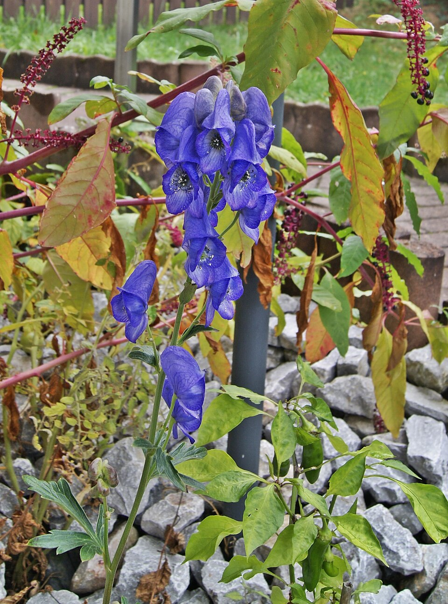
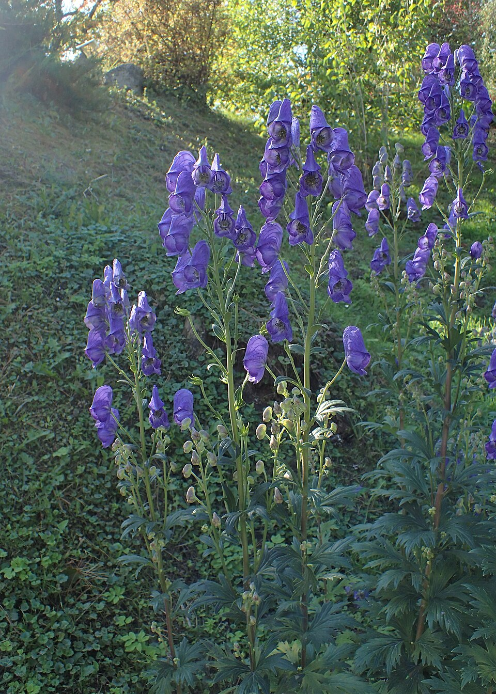
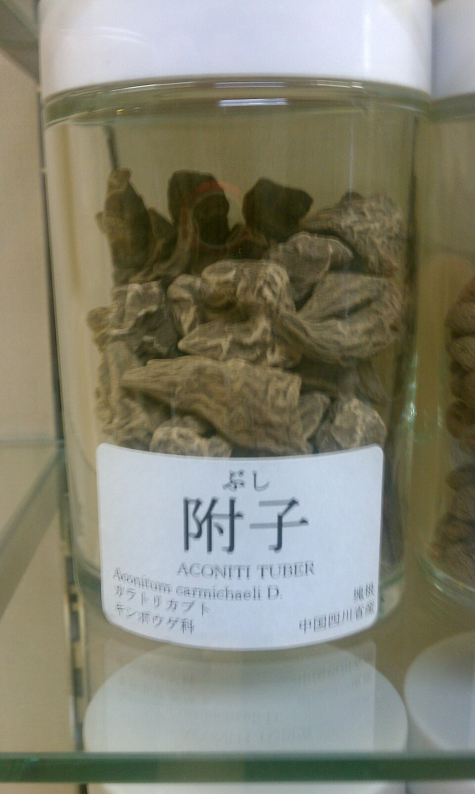

Fùzǐ · Aconite lateral root (processed)附子
Aconiti Lateralis Radix Praeparata · Herbs that warm the interiorAconiti Lateralis Radix Praeparata · 温里药






- Flavour · nature性味
- acrid, sweet; very hot辛、甘，大热
- Channels归经
- Heart, Kidney, Spleen心、肾、脾经
- Direction升降浮沉
- Purely yang and mobile ('moves and does not stay'), reaching all twelve channels: it warms heart yang above, spleen yang in the middle and kidney yang below, so it both ascends and descends性纯阳，走而不守，通行十二经，上助心阳、中温脾阳、下补肾阳，可升可降
- Toxicity毒性
- Toxic有毒
- Dose (pharmacopoeia)用量（药典）
- 3–15 g (ceiling 15 g)（上限 15 克）
Decocted, cooked first and long (the pharmacopoeia says only that; textbooks usually say 30–60 minutes ahead of the other herbs, and checking it is the pharmacy's and practitioner's job, never taste it yourself); processed forms only (black slices, white slices, Dan Fu Pian, Pao Fu Pian)煎服，先煎、久煎（药典只写「先煎，久煎」；教材常写先煎 30–60 分钟，是否煎透由药房与医师把关，不要自己尝）；只用炮制品（黑顺片、白附片、淡附片、炮附片） - Pregnancy孕期
- Caution in pregnancy孕妇慎用 The pharmacopoeia says 'use with caution in pregnancy'. Aconitine can cause arrhythmia and there are no safety data in pregnancy, so this site is stricter: not advised in pregnancy; any use is a joint decision for a licensed TCM practitioner and an obstetric doctor.药典写「孕妇慎用」；乌头碱可致心律失常，孕期缺少安全数据，本站从严：孕期不建议使用，确需时只能由持照中医师与产科医生共同决定。
- Health Canada加拿大卫生部
- Health Canada status: still to be verified加拿大卫生部状态：待核验 No NHPID monograph or specific advisory for Fu Zi or Aconitum has been confirmed yet; to be verified. Context: in 2022 an Aconitum root mislabelled as sand-ginger powder poisoned several people in Canada and was recalled by CFIA, with PHAC reporting the investigation.尚未在加拿大天然保健品数据库（NHPID）核到附子或乌头属的专论或专项警示，待核验。背景：2022 年加拿大发生乌头属药材误标为沙姜粉致多人中毒住院，加拿大食品检验署发出召回，公共卫生署通报调查。
- Conservation资源与保护
- Mainly cultivated (Jiangyou, Sichuan and elsewhere); no international trade controls.栽培品为主（四川江油等地），无国际贸易管制。
- Source来源
- Aconitum carmichaelii Debx.. The lateral (daughter) roots of Aconitum carmichaelii (buttercup family), used only after processingAconitum carmichaelii Debx.。乌头（毛茛科）母根旁生的子根，加工炮制后入药
Toxicity: what goes wrong毒理：会出什么事
The toxins are diester alkaloids (aconitine, mesaconitine, hypaconitine). They hold sodium channels in heart muscle and nerves open, causing ventricular arrhythmias and paralysis. Prolonged heating hydrolyses them into far less toxic monoesters and amine alcohols: that is the chemistry behind 'decoct first and long'. Poisoning typically runs from tingling of the mouth to numb limbs, nausea, vomiting and drooling, then chest tightness, palpitations, low blood pressure and arrhythmia, then convulsions and coma. In 2022 several people in Canada were hospitalised after an aconite root sold mislabelled as sand-ginger powder.毒性成分是乌头碱、新乌头碱、次乌头碱等双酯型生物碱：持续开放心肌与神经的钠通道，引起室性心律失常与神经麻痹。长时间加热使双酯型水解为毒性低得多的单酯型与胺醇型——这就是「先煎久煎」的化学依据。中毒表现依次是口舌发麻→四肢麻木→恶心呕吐、流涎→胸闷心悸、血压下降、心律失常→抽搐、昏迷。加拿大 2022 年就发生过误标为沙姜粉的乌头属药材致多人住院的事件。
Traditional actions and indications功效与主治（传统）
🏛 Traditional statements, not efficacy claims; the modern evidence is graded further down.以下为传统说法，不是疗效主张；现代证据见下文分级。
- Restores collapsed yang and rescues from counterflow cold回阳救逆
- Supplements fire and assists yang补火助阳
- Dispels cold and stops pain散寒止痛
Yang collapse with cold limbs and a faint pulse; insufficient heart yang with chest impediment and heart pain; vacuity-cold vomiting, diarrhoea and cold abdominal pain; declining kidney yang with impotence and a cold womb; yin-cold oedema; external contraction in a yang-deficient person; cold-damp painful impediment.亡阳虚脱、肢冷脉微；心阳不足、胸痹心痛；虚寒吐泻、脘腹冷痛；肾阳虚衰、阳痿宫冷；阴寒水肿；阳虚外感；寒湿痹痛。
How to recognise it怎么认
Growing植株 A perennial herb 0.6–2 m tall; leaves palmately three-parted and deeply cut; blue-purple flowers in autumn with a tall helmet-shaped upper sepal (the mark of the aconite genus). Underground, one mother root (Chuan Wu) bears several daughter roots (Fu Zi).多年生草本，高 0.6–2 米；叶掌状三全裂、裂片再深裂；秋季开蓝紫色花，上萼片高盔状（「盔」是乌头属的标志）。地下有一个母根（川乌），旁生数个子根（附子）。
Decoction pieces饮片 Black slices: lengthwise slices, broad at the top and narrow below, dark-brown skin, cut face dull yellow, glossy and translucent with longitudinal vessel lines, hard and brittle with a horn-like break. White slices: skin removed, yellowish-white and translucent.黑顺片：纵切片，上宽下窄，外皮黑褐色，切面暗黄色、油润有光泽、半透明，可见纵向导管束，质硬而脆，断面角质样。白附片：无外皮，黄白色，半透明。
Still no photo of the black or white processed slices (two Commons searches, 2026-11-24 and 25); the jar picture shows whole dried tubers.缺黑顺片、白附片饮片照：Commons 11-24、11-25 两轮未检到；现有第三张是日本生药标本瓶里的整个干块根。
Processing炮制
- Salted Fu Zi盐附子：: Soaked in brine (bittern) and dried for storage; still needs further processing before use胆巴（卤水）浸泡后晒干，便于保存，仍须再加工后入药
- Black slices / white slices黑顺片、白附片：: Soaked in brine, boiled through, sliced, then steamed or peeled and rinsed; much less toxic, the usual prescribing form浸胆巴后煮透、切片、蒸或去皮漂制，毒性显著降低，是处方最常用的饮片
- Pao Fu Pian / Dan Fu Pian炮附片、淡附片：: Sand-fried, or boiled with licorice and black soybeans; gentler and less toxic砂烫或与甘草、黑豆同煮，温肾暖脾力偏缓，毒性更低
Cautions and incompatibilities使用注意与配伍禁忌
Use with caution in pregnancy (this site is stricter: not advised); avoid with yin deficiency and yang hyperactivity or true heat with false cold; processed forms only, never raw by mouth; not with Ban Xia, Gua Lou, any Bei Mu, Bai Lian or Bai Ji (the eighteen incompatibilities); not with alcohol.孕妇慎用（本站从严：孕期不建议使用）；阴虚阳亢、真热假寒者忌用；只用炮制品，生品不内服；不宜与半夏、瓜蒌、川贝母、浙贝母、平贝母、伊贝母、湖北贝母、白蔹、白及同用（十八反）；不与酒同服。
- Aconite herbs clash with Ban Xia乌头类反半夏 eighteen incompatibilities十八反
- Aconite herbs clash with Gua Lou (and Tian Hua Fen)乌头类反瓜蒌（含天花粉） eighteen incompatibilities十八反
- Aconite herbs clash with every kind of Bei Mu乌头类反川贝、浙贝等各种贝母 eighteen incompatibilities十八反
- Aconite herbs clash with Bai Lian乌头类反白蔹 eighteen incompatibilities十八反
- Aconite herbs clash with Bai Ji乌头类反白及 eighteen incompatibilities十八反
Interactions with medicines与西药的相互作用
- E4 Antiarrhythmics, digoxin and other drugs acting on cardiac conduction抗心律失常药、地高辛等影响心脏传导的药：: Aconitine is itself arrhythmogenic, so the risks point the same way; this rests on mechanism only; no study of these combinations was found.乌头碱本身致心律失常，与这类药叠加，心律失常风险的方向一致；目前只有机制推断，本站未查到专门研究这类合用的资料。
- E5 Alcohol, including medicinal liquors酒（含药酒）：: Forensic practice often meets poisoning from aconite liquors; alcohol can itself cause arrhythmia, and the two act on overlapping heart-muscle ion channels.法医实践中常见乌头类药酒中毒案例；酒精本身也可引起心律失常，两者对心肌离子通道的作用有重叠。
Modern research, graded现代研究（分级）
- E4 Higenamine, first isolated from Aconitum, is regarded as its cardiotonic component (stronger and faster heartbeat, with relaxed blood vessels); its safety and clinical value in people are not established.去甲乌药碱最早从乌头属分离，被认为是其中的强心成分（增强心肌收缩、加快心率，同时使血管舒张）；它在人体的安全性与临床价值还没有弄清。
- E3 Hong Kong data name overdose and inadequately processed root as important causes; incidence fell sharply after publicity measures in late 1991 and later rose again. With raw root or large amounts, poisoning has happened even after long simmering.香港的中毒资料显示，超量和炮制不足是重要原因；1991 年底加强毒性宣传后，当地发病率明显下降，之后又有回升。用生品或大剂量煮汤时，即使长时间炖煮也发生过中毒。
In the classics古籍原文
「附子味辛溫有毒。主治風寒咳逆邪氣，溫中，金創，破癥堅積聚，血瘕寒濕，踒躄拘攣，膝痛不能行走」——神农本草经
Shennong Bencao Jing (Divine Farmer's Materia Medica)
The Shennong Bencao Jing places Fu Zi in its lowest, 'toxic' grade and says so in its first words: used for wind-cold cough, cold-damp painful impediment and knee pain that stops one walking. Its later fame for 'restoring collapsed yang' comes mostly from Zhang Zhongjing's Si Ni Tang family of formulas.《神农本草经》列附子为下品，开宗明义写「有毒」：古人用它治风寒咳逆、寒湿痹痛、膝痛不能行走，重在温散寒湿；后世「回阳救逆」的用法主要来自张仲景的四逆汤一类方。
Where it is used: the web串联：它在哪些方里、连到哪里
Classical formulas (Shanghan, Jingui)经方（伤寒、金匮）
Later formulas (Song to Qing)时方（宋元明清）
| Formula方 | Role角色 | Dose: original / today剂量：原书／今用 | Partners in the formula同方配伍 |
|---|---|---|---|
| Bolster the Spleen Beverage实脾饮 | Monarch君 | original text: see the Chinese original此处未单列分量（须对纸本） | Bai Zhu (white atractylodes)白术 · Fúlíng (Poria)茯苓 · Gāncǎo (Licorice root)甘草 · Hou Po (magnolia bark)厚朴 · Da Fu Pi (areca peel)大腹皮 · Cao Dou Kou (alpinia seed)草豆蔻 · Mùxiāng (Costus Root)木香 · Mu Gua (Chinese quince)木瓜 · Gānjiāng (Dried ginger)干姜 |
Folk and single-herb remedies偏方、验方、单方
| Formula方 | Use用法 | Self-use能否自用 |
|---|---|---|
| Raw aconite powder on the soles (chronic mouth ulcers)生附子末贴足心（久患口疮） | External use外用 | Literature record only: not advised for self-use仅作文献记录，不建议自行使用 |
Patterns reached through these formulas经由这些方连到的证
- Lesser-yin cold transformation / yang collapse (severe)少阴寒化 / 阳衰（重症） ← Poria Frigid Extremities Decoction茯苓四逆汤, Aconite Decoction附子汤, Frigid Extremities Decoction四逆汤, Vessel-Freeing Frigid Extremities Decoction通脉四逆汤Symptoms症状 Fainting (first aid)晕厥（急救）
- Yang deficiency with water flooding / fluids rising阳虚水泛 / 中阳不足、水饮上逆 ← Poria Frigid Extremities Decoction茯苓四逆汤, True Warrior Decoction真武汤
- Defensive-qi deficiency with unsecured exterior表虚不固（卫气虚） ← Cinnamon Twig Decoction plus Aconite桂枝加附子汤Qigong功法 Tai chi (simplified 24-form)太极拳（简化二十四式）
- Taiyang wind strike (nutritive and defensive qi out of step)太阳中风（营卫不和） ← Cinnamon Twig Decoction plus Aconite桂枝加附子汤
- Combined greater-yang and lesser-yin (cold in a yang-deficient person)太少两感（阳虚外感） ← Ephedra, Asarum and Aconite Decoction麻黄细辛附子汤
- Kidney yang deficiency肾阳虚 ← Kidney Qi Pill肾气丸（金匮肾气丸）
Exam notes (HER)考点（HER）
HER essentials: (1) source (daughter root of Aconitum carmichaelii) versus Chuan Wu (mother root) and Cao Wu; (2) the chief herb for restoring yang, with Gan Jiang and Gan Cao in Si Ni Tang; (3) decoct first and long, caution in pregnancy, the eighteen incompatibilities; (4) signs of poisoning and that it is an emergency.HER 必考：①来源（乌头子根）与川乌（母根）、草乌的区别；②回阳救逆第一品药，与干姜、甘草配四逆汤；③先煎久煎、孕妇慎用、十八反（半蒌贝蔹及攻乌）；④中毒表现与解救（就医，阿托品、抗心律失常处理属急诊范围）。
Sources依据
- Chinese Pharmacopoeia Commission. Pharmacopoeia of the People's Republic of China, 2020 edition, vol. I国家药典委员会《中华人民共和国药典》2020 年版一部
- Zhong Gansheng (ed.). Chinese Materia Medica (national TCM higher-education textbook series)钟赣生主编《中药学》（全国中医药行业高等教育规划教材）
- Chan TYK. Aconite poisoning. Clin Toxicol (Phila). 2009;47(4):279-285 ↗
- Public Health Agency of Canada (2022). Public health notice: aconitine toxin linked to galanga (sand ginger) powder ↗
- English version coming潘梦琛 等. 乙醇-乌头碱致心律失常的毒理分子机制研究进展. 法医学杂志. 2020;36(1):115-119 ↗
- Zhang N, et al. Applications of higenamine in pharmacology and medicine. J Ethnopharmacol. 2017;196:242-252 ↗
- Chan TY. Incidence and causes of Aconitum alkaloid poisoning in Hong Kong from 1989 to 2010. Phytother Res. 2015;29(8):1107-1111 ↗
- Chan TY. Aconitum alkaloid poisoning related to the culinary uses of aconite roots. Toxins. 2014;6(9):2605-2611 ↗